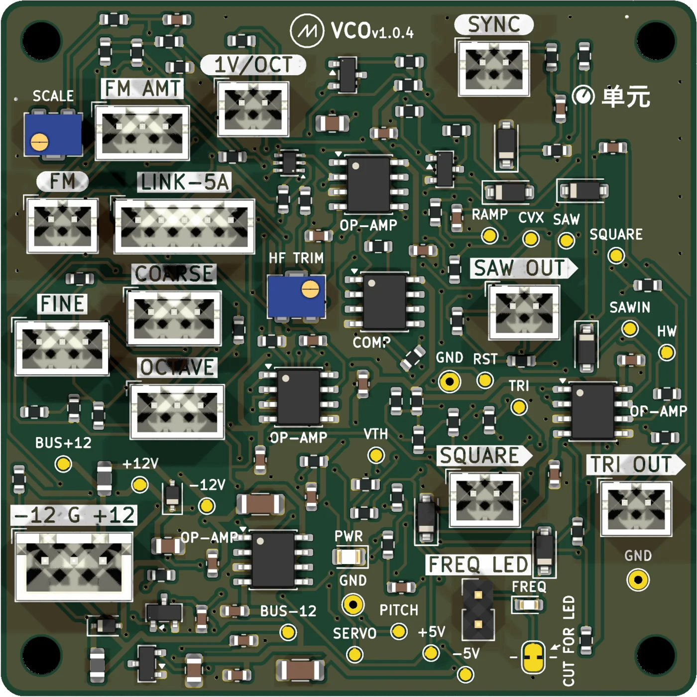
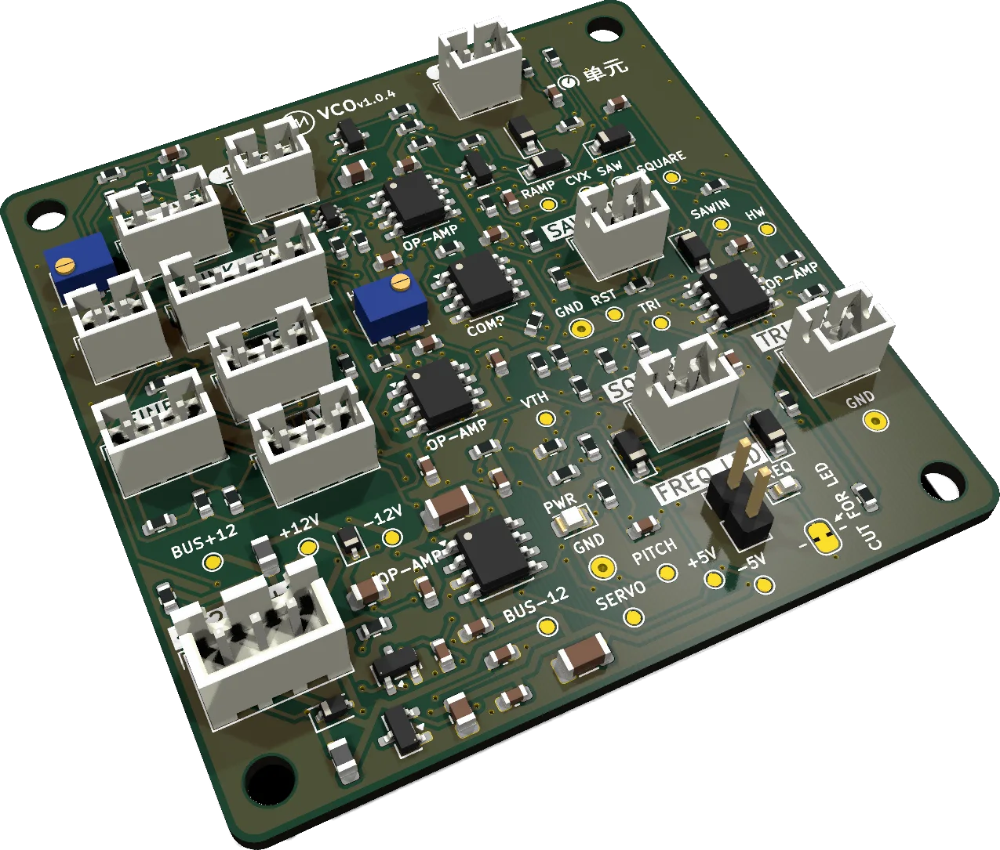
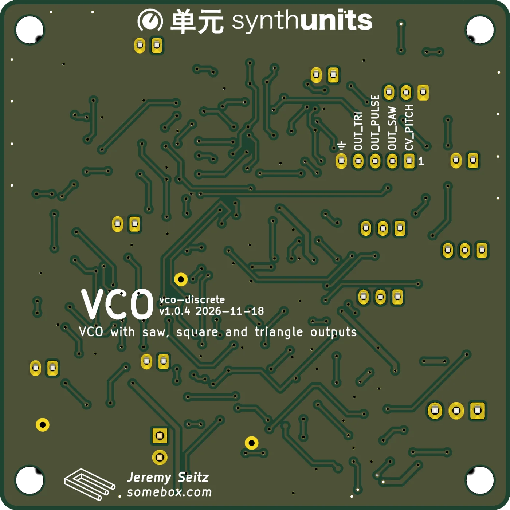
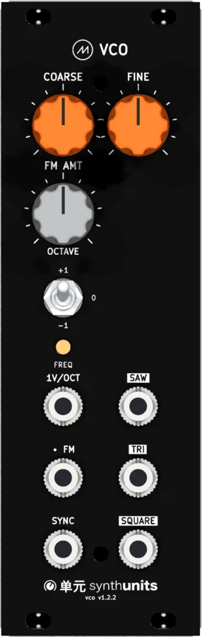
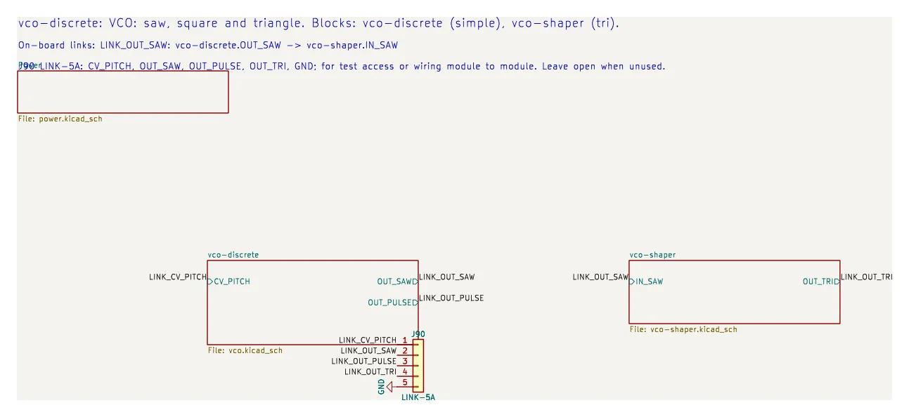
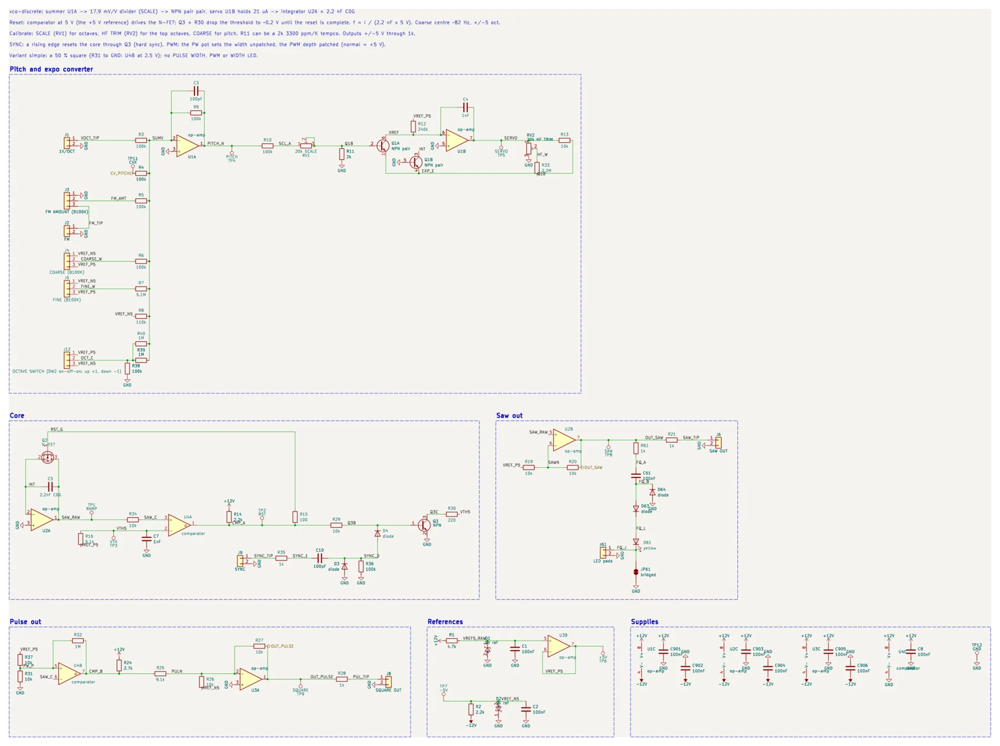
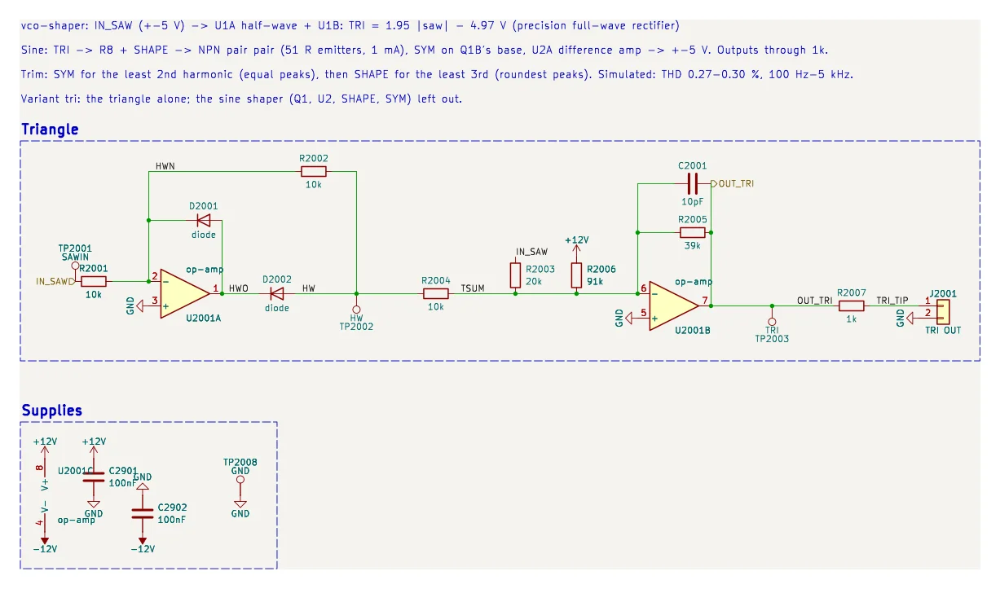

VCO: saw, square and triangle
A discrete 1 V/oct oscillator with saw, square and triangle outputs, hard sync, FM and an octave switch.
The simple core of my VCO, on a 60 × 60 mm board: a sawtooth oscillator with no VCO chip, so all of its circuit can be assembled by the board house. The pitch CVs and knobs sum into an exponential converter on a matched NPN pair, with an op-amp servo holding the reference side at a fixed current. The other transistor's current charges an integrator, and a comparator resets it at 5 V. A second comparator makes a 50 % square from the ramp, and a precision full-wave rectifier folds the saw into a triangle.
The tuning knobs and the core's threshold hang from two 5 V shunt references, not the ±12 V rails, so the pitch hardly moves with the supply. An HF TRIM gives back the pitch the reset time takes from the top octaves.
In a patch it is the start of a voice: SAW or SQUARE into a filter, the triangle for a softer tone or as a modulator. SYNC takes any gate, clock or square for hard-sync sweeps, and FM takes an LFO for vibrato. PWM, the sub-octave and the sine are on the 10 HP Eurorack version.
- Status
- Being made
- Version
- v1.0.4 (2026-11-18)
- Board
- 60 × 60 mm, 2 layers
- First order
- 5 boards, 2 assembled by the fab
- Rough price
- about $40–45 (how)




Block diagram
Drawn by the site's generator from the board's own data: its blocks, its connectors and the links between them. The pots and switches are listed in the block they set.
What it does
- Outputs: SAW ±5 V; SQUARE 50 %, about +4.8 / −5.2 V; TRI about +4.8 / −5.0 V; each through 1 kΩ.
- Inputs: 1V/OCT (100 kΩ); FM, exponential, up to 1 V/oct with FM AMOUNT at full; SYNC, hard sync on a rising edge.
- Range: COARSE ±5 octaves round about 82 Hz (2.6 Hz to 2.6 kHz), FINE ±1.2 semitones, OCTAVE switch ±1 octave; the CVs add to that.
- Tracking, simulated: within 2 cents over five octaves (0 to 5 V in, 333 Hz to 10.7 kHz) with HF TRIM set. Not measured.
- Pitch against the +12 V rail, simulated: about 4 cents per volt.
- Triangle, simulated: its odd harmonics within 0.1 dB of an ideal triangle's; the 2nd harmonic depends on resistor matching, about −49 dB typical.
- Power: about 24 mA on +12 V and 14 mA on −12 V, estimated from the circuit.
- Board: 60 × 60 mm, 2 layers, four M3 holes.
Connections
| Connector | Wire to | Housing | Pins |
|---|---|---|---|
| 1V/OCT | a jack (Thonkiconn) | JST PH, 2 pins, top entry | 1 tip, 2 GND |
| FM | a jack (Thonkiconn) | JST PH, 2 pins, top entry | 1 tip, 2 GND |
| FM AMOUNT (B100K) | a pot (Alpha 9 mm B100K) | JST PH, 3 pins, top entry | 1 CCW, 2 wiper, 3 CW |
| COARSE (B100K) | a pot (Alpha 9 mm B100K) | JST PH, 3 pins, top entry | 1 CCW, 2 wiper, 3 CW |
| FINE (B100K) | a pot (Alpha 9 mm B100K) | JST PH, 3 pins, top entry | 1 CCW, 2 wiper, 3 CW |
| SAW OUT | a jack (Thonkiconn) | JST PH, 2 pins, top entry | 1 tip, 2 GND |
| SQUARE OUT | a jack (Thonkiconn) | JST PH, 2 pins, top entry | 1 tip, 2 GND |
| SYNC | a jack (Thonkiconn) | JST PH, 2 pins, top entry | 1 tip, 2 GND |
| OCTAVE SWITCH (DW2 on-off-on: up +1, down -1) | a toggle switch | JST PH, 3 pins, top entry | 1 A, 2 common, 3 B |
| POWER (1 -12V, 2 GND, 3 +12V) | a the power board output (straight-through JST XH lead) | JST XH, 3 pins, top entry | 1 −12 V, 2 GND, 3 +12 V |
| TRI OUT | a jack (Thonkiconn) | JST PH, 2 pins, top entry | 1 tip, 2 GND |
| LINK-5A | a lead to another module, or open | JST PH, 5 pins, top entry | 1 CV_PITCH, 2 OUT_SAW, 3 OUT_PULSE, 4 OUT_TRI, 5 GND |
Every panel control has its own connector with a fixed pinout, so any lead of the right size fits any module. Pin 1 is the square pad.
LEDs
On the board: FREQ (yellow), PWR (green). Pads for a panel LED: FREQ LED.
Wiring and setup
- Power: a 3-pin JST XH lead (1 −12 V, 2 GND, 3 +12 V) from one of the power hub's outputs. A ferrite and a series Schottky on each rail mean a lead with the rails swapped does no harm; one with GND on a rail pin isn't protected, so check each lead with a meter first.
- Panel: 6 jacks (1V/OCT, FM, SYNC, SAW OUT, SQUARE OUT, TRI OUT), 3 Alpha 9 mm B100K pots (COARSE, FINE, FM AMOUNT) and an on-off-on toggle (OCTAVE: up +1, down −1). Each has its own top-entry JST PH connector beside its circuit: jacks 2-pin (1 tip, 2 GND), pots 3-pin (1 CCW, 2 wiper, 3 CW), the toggle 3-pin (1 A, 2 common, 3 B). A straight-through lead joins each to its breakout board, or solder wires straight in.
- FREQ LED pads: the on-board yellow LED gets brighter with the frequency. For a panel LED, cut the bridged solder jumper beside the pads and wire the LED in series, anode to the square pad; it carries the on-board LED's current and needs no resistor.
- LINK-5A: 1 pitch CV in, 2 saw, 3 square, 4 triangle, 5 GND. The outputs come before their 1 kΩ, and the input sums with the 1V/OCT jack. For a short lead to another module, or test access.
- Front panel: the series' shared 8 HP layout, with the board sideways behind it on a printed sled.
- Calibrate warm, after about 20 minutes in its case: set COARSE for C at 1 V; trim SCALE (a multi-turn trimmer) until 3 V plays two octaves higher; then HF TRIM, starting a quarter of the way from its ground end, until 5 V is two octaves above 3 V. Recheck SCALE and COARSE.
- At first power-up, check that the +5V and −5V test pads read ±5.00 V before anything else.
Limits and open questions
- Nothing is built or measured. The simulations use an identical transistor pair at a fixed 27 °C, so they say nothing about drift.
- No tempco resistor: the expo pair drifts as a scale error, about 4 cents per octave per kelvin in simulation. Calibrate it warm. A 2k, 3300 ppm/K tempco resistor can take the place of the expo divider's resistor, soldered by hand.
- The reset comparator runs a little past the sink current its datasheet specifies. A typical part has margin; a poor one could stall the core when warm. I'll screen each VCO warm at bring-up, and the rework is two small parts.
- If the 5 V reference is lost for more than a fraction of a second (a shorted pad, a plug on the wrong pins), the servo can reverse-bias the matched pair and damage it for good. Check the references first; if the VCO is silent and the SERVO pad reads positive, power off.
- OCTAVE is a few cents out with 1 % resistors, up to about 33 cents in the worst case. The LINK pitch input can be up to ±24 cents an octave off the jack's unless two resistors are swapped for 0.1 % parts.
- The servo limits fast pitch changes: audio-rate exponential FM loses depth above about 2.4 kHz.
Development notes
- The topology is the standard one, the exponential converter with a servoed reference and an integrator-and-reset core. I drew it from scratch, with René Schmitz's expo and tempco tutorial and the Erica Synths × Moritz Klein EDU VCO manual as references.
- This board began as the full VCO. I split it: the simple core (saw, square, triangle) here, and everything else (PWM, the sub-octave, the sine) on the 10 HP Eurorack board, from the same blocks.
- Simulation caught two traps in the reset. The first version ended its reset early and left the ramp at 3.4 V; then, with a real transistor model, the core could stick in reset for good. The threshold now collapses during the reset and is held at about 0.2 V. A review moved the references from ±10 V to ±5 V, because the 10 V one ran into the op-amp's swing and would have made the pitch follow the rail.
- For the triangle I simulated a precision rectifier against a one-transistor folder. The folder buzzed at every reset; the rectifier's notch sits 65 dB down at 1 kHz, so it won.
- Next: build it, then measure tracking over six to eight octaves and the warm-up drift with and without a tempco. A later revision moves the expo divider's resistor next to the pair and adds a protection diode at the servo.
Schematic
The schematic as drawn, with each chip named by its function rather than its part number. The design isn't open source yet, so there are no files to download.







Would you use a VCO? A thumbs-up on its tracking issue is how I count interest, and you can subscribe there to follow its bring-up. Questions and ideas go to the discussions.